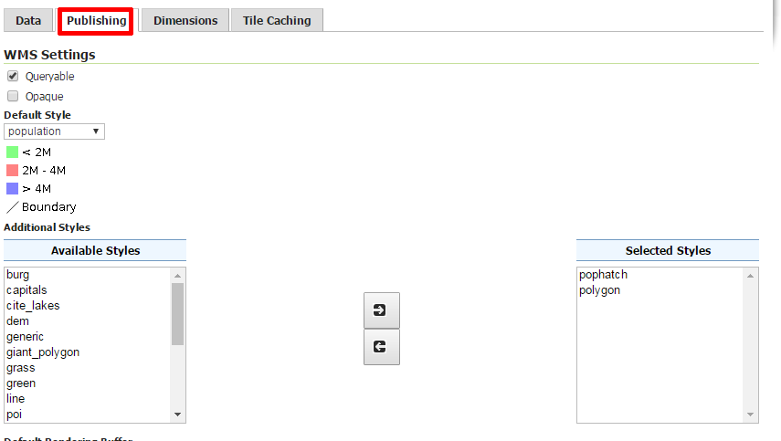

Publikování vektorových dat
V rámci publikování vektorových dat můžete ještě na dalších kartách nastavovat
jakým způsobem budou data prezentována.
Publishing
Karta Publishing nabízí zejména nastavení implicitního stylu a seznamu doporučovaných
alternativních stylů.

Obr. 54 Nastavení stylů.